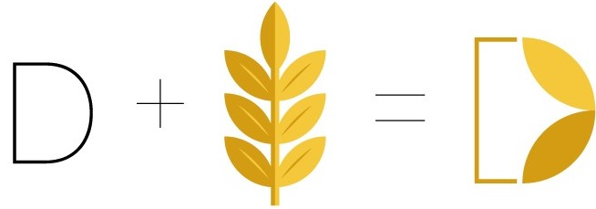
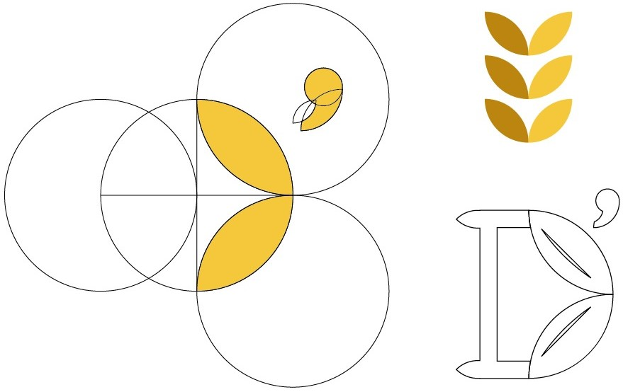
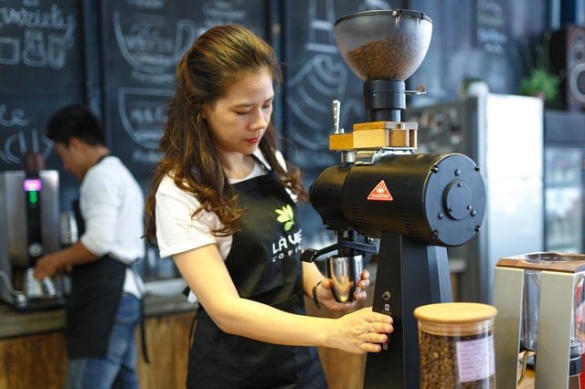
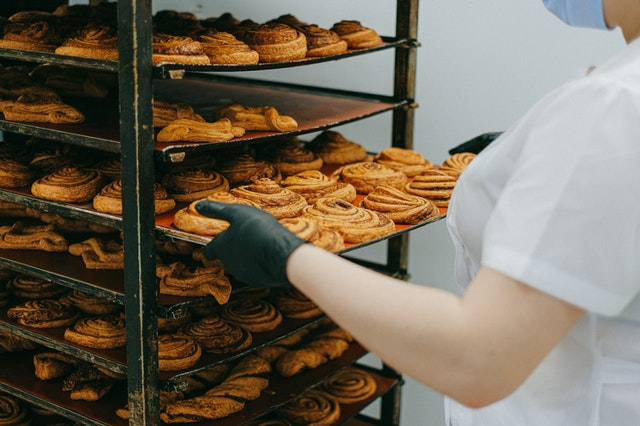
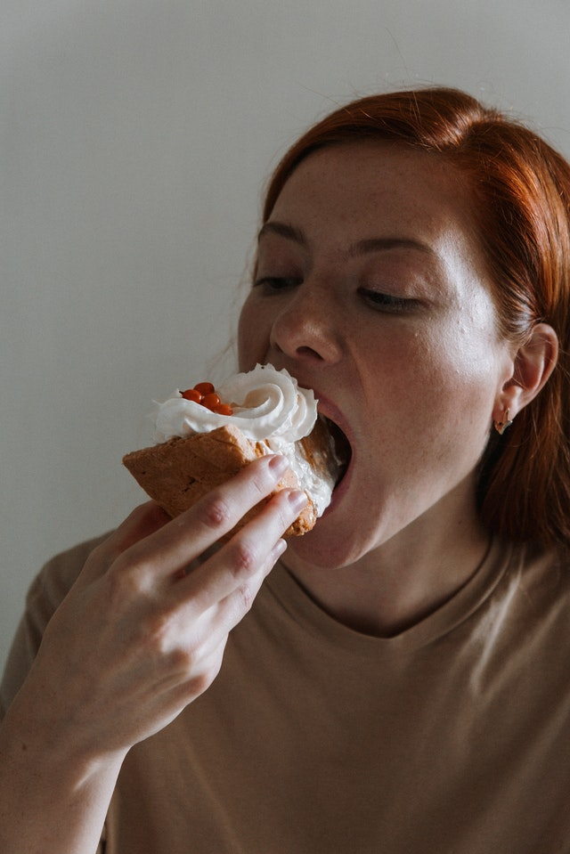
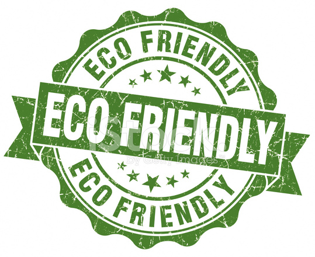
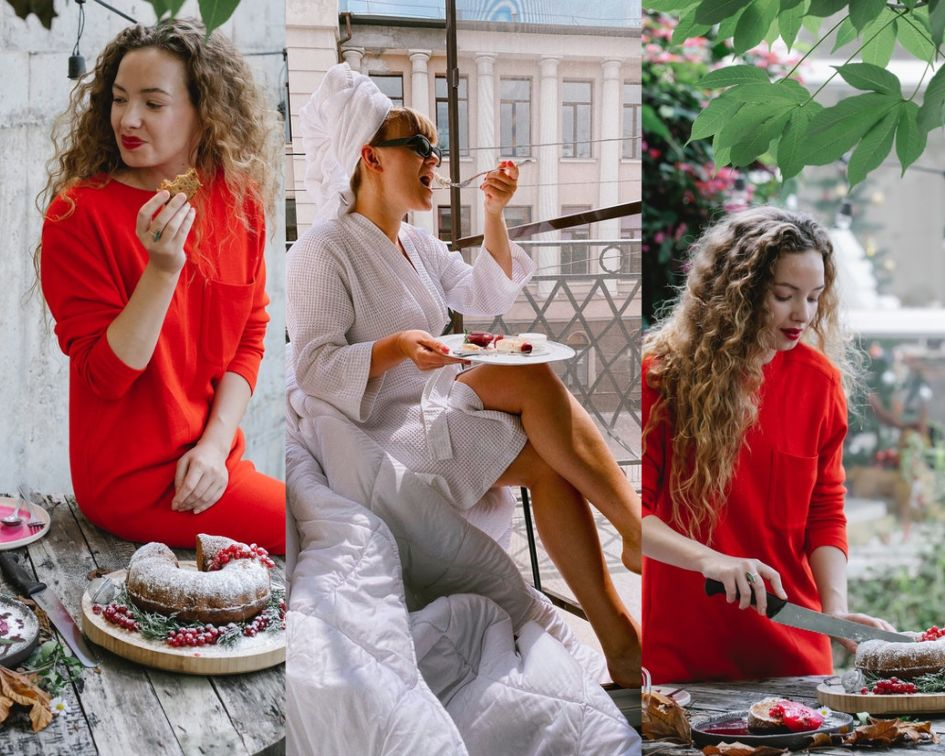
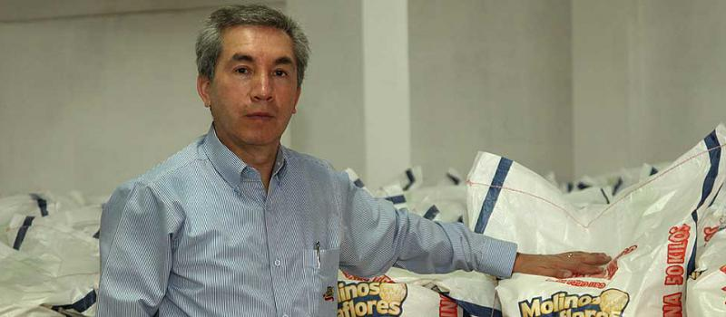

Nuestra panaderia fue fundada en 1999 por Katy Budapest. Sus padres son de Ucrania, ellos se mudaron a Ecuador en el año 1970 por causas desconocidas. Katy nació en el año 1971 en Guayaquil, su madre se dedicaba a la reposteria y su padre a la carpinteria.
Ella le ayudaba a su mamá en la cocina, y así su pasión por los postres fue creciendo.
Ella tenía un sueño, ser la mejor repostera que haya tenido el país, así que con la ayuda de sus padres, pudo abrir su propia panaderia.

Katy estaba en busca de un logo único e incomparable con la competencia, entonces buscó a uno de los mejores diseñadores graficos que tiene Guayaquil, Eduardo Alcarraz. El le diseñó un logo basado en el trigo y lo tan importante que es compartir con los demas.
Idea:
Construcción:
Contamos con un gran equipo, cada persona es importante porque implementa una gran ayuda con valor y sentimiento al trabajar.
Tenemos 22 años de experencia laboral con muchos certificados por ser una de las mayores panaderias que tiene el país, pero el mayor certificado que nos importa a nosotros es que tu paladar disfrute cada bocado.
 Es entregar una gran experencia a tu paladar, y así puedas saborear lo exquisito y deliciosa que es la vida.
Horneamos los mejores panes en la ciudad, tenemos una gran variedad de postres para que nunca dejes de volver. Lo principal es que siempre estes con nosotros.

*Cursos son incluido IVA*

Este es un postre clásico infaltable que de seguro ya pertenece a uno de tus favoritos
Una delicia que lleva 2 planchas de bizcocho de chocolate, separadas por una fina capa de mermelada de damasco y recubiertas con glaseado de chocolate.
El gelato es originario de Italia, ojo, no es lo mismo que un helado.
Suena parecido y de hecho la preparación es muy similar pero sin duda la experiencia de texturas y sabores es totalmente diferente. Sin lugar a dudas, el gelato es uno de los mejores postres del mundo.
Este postre es de origen italiano y está hecho a base de café, licor y crema.
Su preparación es sencilla, solo hay que humedecer un bizcocho con una mezcla de café y licor y superponerlo en capas, alternando entre la crema y el bizcocho.
Es un dulce especial de origen italiano, parecido al flan y con una textura suave y gelatinosa.
Se considera uno de los postres más fáciles de preparar y también uno de los más famosos en este país.
Esta hecho a base de crema de leche, azucar y gelatinizantes.
Es un postre originario de Portugal, perfecto para compartir.
Este postre fue creado a principios del siglo XIX, como una iniciativa de negocio en la época de revolución en Portugal. Así que tengan por seguro que probarlas será todo un privilegio de esta lista.
Según cuenta la leyenda, la receta de este postre lleva en secreto por más de 200 años y solo 3 personas en el mundo la conocen. Estos pequeños pasteles tienen forma de tartaleta y están elaborados con masa de hojaldre y crema.
Pávlola, es un postre que transmite dulzura, sin duda. El origen de este postre se lo disputan Nueva Zelanda y Australia.
La Pávlola consiste en una base de merengue horneado sobre la cual se coloca crema batida, chocolate y trozos de fruta, en especial los frutos rojos. Su textura resulta crocante por fuera y húmeda por dentro. Una verdadera delicia.

Pastafrola, también conocido con el nombre pasta flora, es un postre artesanal típico de Argentina, Paraguay y Uruguay.
Esta tarta es característica por la preparación original de la masa de pastel cubierta por dulce de membrillo, aunque varía entre dulce de leche, dulce de guayaba o alguna otra salsa. Luego es adornada con tiras delgadas de la misma masa, dando forma a una especie de red que posteriormente se cocina en el horno.
Crema de Papaya, el postre más famoso en Brasil desde 1990, además es sumamente delicioso.
Este postre esta hecho a base de una crema de papaya y se acostumbra servirlo con helado de vainilla. Perfecto para una tarde de verano.
Mazamorra morada, este postre es de origen peruano y muy especial, ya que solo podrás encontrarlo en este país.
Está hecho a base de maíz morado que es un alimento cultivado desde épocas prehispánicas y es complicadísimo de encontrar ya que se dice que solo crece en tierras peruanas.
El morocho es una bebida tipica de Guayaquil de singular aroma y exquisito sabor que se ha popularizado en todo el Ecuador.
Se elabora con maíz morocho, leche, panela y canela y se suele servir con pan de yuca.
No puede faltar en la lista este famoso postre peruano que fue creado en el siglo XIX en la capital de Lima. Está elaborado con manjar blanco, crema de leche y azúcar, y es coronado con un dulce merengue.
Según su dulce historia, este postre fue creado por Amparo Ayarza, esposa del poeta José Gálvez Barrenechea. Fue este poeta quien le dio el nombre al postre ya que su textura es suave y dulce como el suspiro de una mujer.
Estos postres son tradicionales de Ecuador y podrás encontrarlos definitivamente en todos los rincones del país, la espumilla es una especie de dulce frío o helado que no se derrite y que puede servirse con varios ingredientes extra (hojuelas de coco, jarabe y mucho más).
Guayaquil, ya contamos con el servicio a domicilio, para que saborees nuestro mas grande Café acompañado de un suculento dulce o un pan tradicional.
Estamos muy agradecidos con la naturaleza por entregarnos tan maravillosas frutas, por lo tanto tenemos que tenerla conservada, y darle un respiro con energia renovable.


Sabemos que el Covid-19 sigue rondando en Ecuador y el mundo entero...
Por lo tanto debemos cuidarnos y cuidar a nuestros seres queridos, el equipo de Panes & Panas está comprometido a cuidarte, por lo tanto siempre cumpliran con el protocolo de bioseguridad.
¡Tú!..Eres lo mas importante para el equipo, porque nos llena de felicidad el alegrarte el día y solo queda que disfrutes tu pedido en todo lugar.
Aceptamos:
Tenemos los mejores postres para estas fiestas navideñas, con las mejores recetas y secretos para ese sabor único e incomparable, para compartir con toda la familia y pasar la noche buena llena de postres nuevos.
La empresa Molinos Miraflores Sociedad Anónima (S.A.) es una especialista en la producción de harina de trigo fortificada, para la elaboración de pan, pastas, tortas, bocaditos… Por esta gestión, la firma ambateña, con 355 años de historia y tradición, abastece con la materia prima a las panaderías de varias ciudades del país. a calidad del producto, su rendimiento y alta demanda hicieron que el año pasado facturara USD 7,7 millones; es decir, obtuvo un crecimiento del 20%.
Se conoce como energias limpias o energias verdes a aquellas formas de obtencion de energia que producen un mínimo o nulo impacto ecológico en el medio ambiente, durante sus procesos de extranción y generación. Es decir se trata de energias ecológicas o Eco-amigables.
El amor puede esperar...El hambre no.
Tripa vacia, corazón sin alegría.
Si un día sientes un vacio..Come es hambre.
No hay amor mas sincero que el amor por la comida.
Cocinar con amor, te alimenta el alma.
Estoy empenzando a creer que solo nací para comer y dormir.
Una comida sin postre, es como un traje sin corbata.
No dejes para mañana lo que puedes comerte hoy.
Comer juntos es lo mejor.
Lo bueno de ser domingo, es que hasta el lunes se comienza la dieta.
Si tienes alguna frase para la página, no dudes en escribirnos.